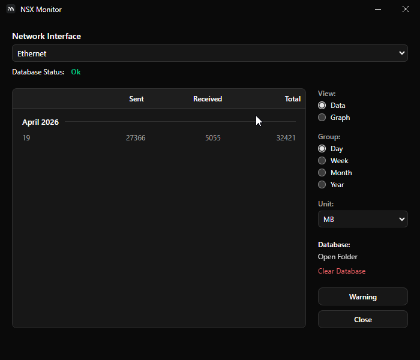
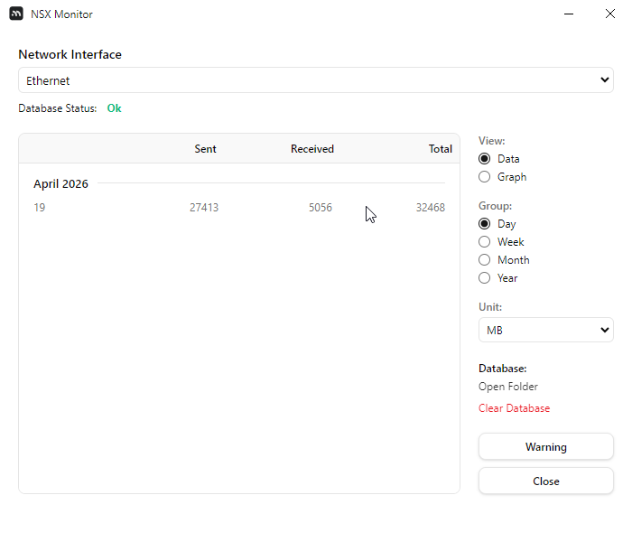

A high-performance desktop application for real-time bandwidth monitoring, historical usage tracking, and intelligent network diagnostics across all Windows interfaces.
+ +Low-level packet inspection and throughput calculation for all active interfaces.
Persistent local storage logs hourly and daily bandwidth metrics for retrospective analysis.
Real-time Rx/Tx byte tracking with visual charting for desktop performance.
High-fidelity tracking of Rx and Tx bytes across all network interfaces with sub-second accuracy and real-time visualization.
Comprehensive data persistence that logs your bandwidth usage over days, weeks, and months for deep retrospective analysis.
A lightweight desktop overlay widget and system tray integration designed to monitor network throughput without interrupting your workflow.
Background daemon with tray actions and quick settings.
Optimized bindings ensure NSX Monitor stays silent in the background with negligible CPU and memory usage on your system.

